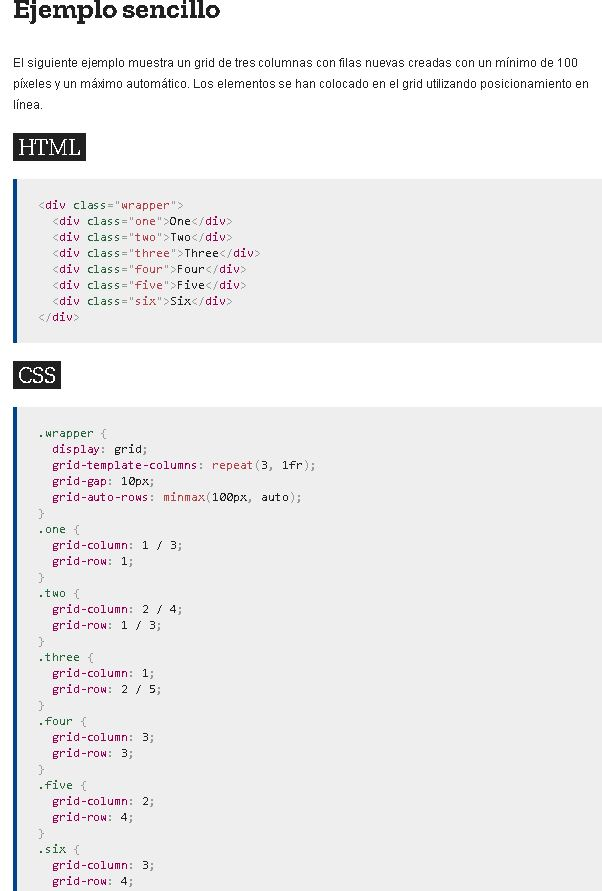
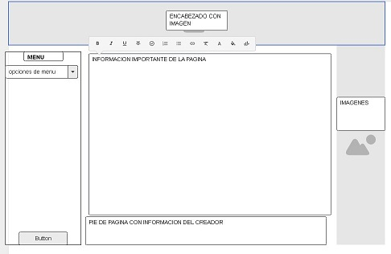

INICIO TEMAS TEMA 1 TEMA 2 RECURSOS DIGITALES RECURSO 1 RECURSO 2 APRENDIZAJE ACTIVIDAD 1 ACTIVIDAD 2 ACERCA DE FELIPE ADOLFO LORA JEICOK_10@HOTMAIL.COM 3143678517 ¿Qué es Flexbox? Flexbox es un módulo de diseño de CSS3 que se creó para mejorar la forma en la que se hace diseño responsive, evitando así el uso de float, escribiendo menos código y facilitando el posicionamiento de elementos, incluso no teniendo noción del tamaño de éstos. Básicamente la idea de Flexbox es poder alterar el ancho, alto y posicionamiento de elementos de la mejor manera con el espacio del que disponemos. Estructura La estructura de Flexbox se compone de contenedores padre e hijos (Contenedor-Flex y Elementos-Flex respectivamente) El Contenedor-Flex es nuestro contenedor padre, y es él quién va a contener a todos los elementos hijos a los cuáles queremos posicionar. El Elemento-Flex es nuestro elemento hijo, el cual utilizará todo el espacio disponible para ubicarse de acuerdo a las propiedades a las cuales este sometido junto a los demas Elementos-Flex contenidos. Cada diseño flex esta compuesto por dos ejes: Un eje principal que define el posicionamiento horizontal de los Elementos-Flex. Un eje secundario que define el posicionamiento vertical de los Elementos-Flex. El Contendor-Flex contiene direcciones que definen el origen y el fin del flujo de Elementos-Flex: Inicio principal Fin principal Inicio secundario Fin secundario CSS Grid Layout CSS Grid layout contiene funciones de diseño dirigidas a los desarrolladores de aplicaciones web. El CSS grid se puede utilizar para lograr muchos diseños diferentes. También se destaca por permitir dividir una página en áreas o regiones principales, por definir la relación en términos de tamaño, posición y capas entre partes de un control construido a partir de primitivas HTML. Al igual que las tablas, el grid layout permite a un autor alinear elementos en columnas y filas. Sin embargo, con CSS grid son posibles muchos más diseños y de forma más sencilla que con las tablas. Por ejemplo, los elementos secundarios de un contenedor de cuadrícula podrían posicionarse para que se solapen y se superpongan, de forma similar a los elementos posicionados en CSS.  MOCKUP 
¿Qué es Flexbox? Flexbox es un módulo de diseño de CSS3 que se creó para mejorar la forma en la que se hace diseño responsive, evitando así el uso de float, escribiendo menos código y facilitando el posicionamiento de elementos, incluso no teniendo noción del tamaño de éstos. Básicamente la idea de Flexbox es poder alterar el ancho, alto y posicionamiento de elementos de la mejor manera con el espacio del que disponemos. Estructura La estructura de Flexbox se compone de contenedores padre e hijos (Contenedor-Flex y Elementos-Flex respectivamente) El Contenedor-Flex es nuestro contenedor padre, y es él quién va a contener a todos los elementos hijos a los cuáles queremos posicionar. El Elemento-Flex es nuestro elemento hijo, el cual utilizará todo el espacio disponible para ubicarse de acuerdo a las propiedades a las cuales este sometido junto a los demas Elementos-Flex contenidos. Cada diseño flex esta compuesto por dos ejes: Un eje principal que define el posicionamiento horizontal de los Elementos-Flex. Un eje secundario que define el posicionamiento vertical de los Elementos-Flex. El Contendor-Flex contiene direcciones que definen el origen y el fin del flujo de Elementos-Flex: Inicio principal Fin principal Inicio secundario Fin secundario